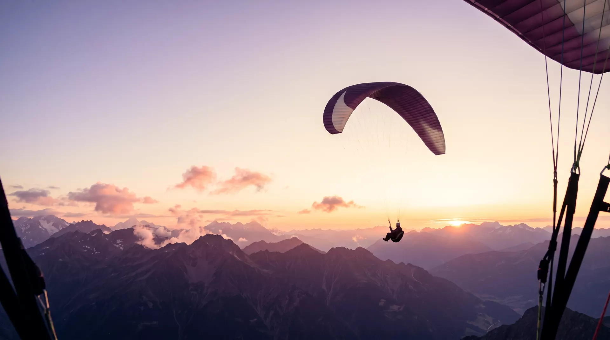

Schnupperkurs
Zwei Tage Bodenhandling und erste Gleitflüge — spüren, wie der Schirm über dir lebendig wird.
- 2 Tage, Ausrüstung inklusive
- Erste Flüge ab dem Übungshang
- Voll anrechenbar an den Grundkurs
Lerne Gleitschirmfliegen dort, wo die Thermik zuhause ist — über Graten, die im Morgenlicht glühen, mit Menschen, die seit zwanzig Jahren nichts lieber tun.
Seit 2003 bringen wir Menschen vom Übungshang oberhalb von Frutigen bis über die Dreitausender. Kleine Gruppen, Funkbetreuung bei jedem Flug und Startplätze für jede Windrichtung — damit du nicht auf gutes Wetter wartest, sondern es findest.
Unsere Ausbildung ist wie eine Bergtour aufgebaut: Du beginnst am Übungshang, gewinnst Höhe, und irgendwann trägt dich die Thermik weiter, als du zu Fuss je gekommen wärst.
Zwei Tage Bodenhandling und erste Gleitflüge — spüren, wie der Schirm über dir lebendig wird.
Der Weg zum Schweizer Brevet: Höhenflüge mit Funkbetreuung, Theorie am Abend, Startplatz am Morgen.
Für Brevetierte, die länger oben bleiben wollen: Thermik lesen, Bärte zentrieren, erste Strecken planen.
Fliegen ist keine Mutprobe. Es ist Handwerk, Wetterkunde und Geduld — und genau das geben dir unsere Fluglehrerinnen und Fluglehrer mit, Flug für Flug.

Der ehrlichste Weg herauszufinden, ob Fliegen dein Ding ist: einmal mitkommen. Beim Tandemflug übernimmt eine Pilotin oder ein Pilot mit Passagierbrevet den Schirm — du übernimmst das Staunen.